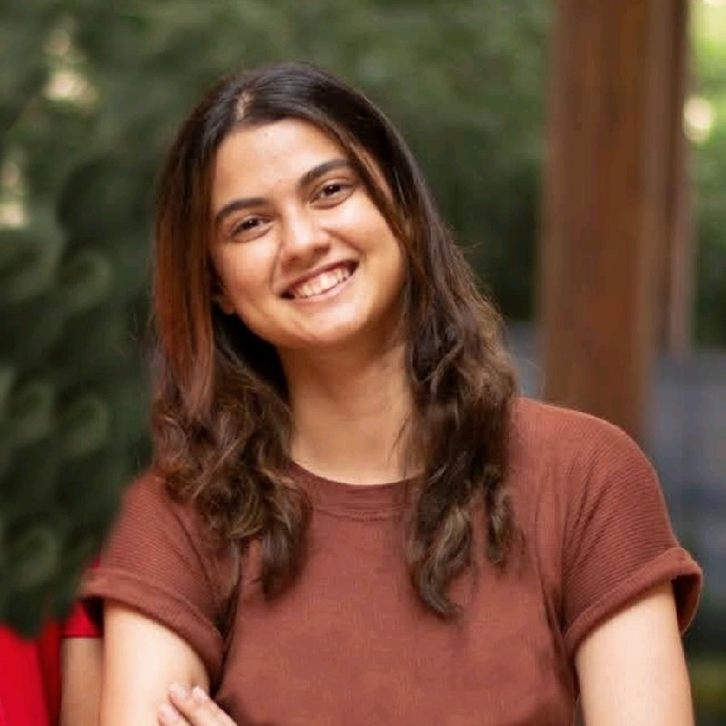

Mariam Abidi

Summary
Dedicated software developer with expertise in Python and Java.
Strong problem-solving skills and a commitment to continuous learning.
Seeking to contribute to dynamic engineering teams.
Education
- Master's in Computer Science - Rochester Institute of Technology (Aug 2023 – May 2025)
Relevant Coursework - Computational Problem Solving, Advance Object Oriented Programming, Foundations of Computer Science Theory,
Introduction to Big Data, Foundations of Artificial Intelligence, Foundations of Algorithms.
- Bachelor’s in Information Technology - St. Francis Institute of Technology (Aug 2019 – May 2023)
Project Experience
Touchless Gesture Detection System | Python, OpenCV, MediaPipe
- Utilized OpenCV to create a video capture object, enabling real-time webcam video streaming for gesture recognition and mouse function activation.
- Enhanced hand detection efficiency by 20% through color space conversion from BGR to RGB and the application of Harris corner detection and Convolutional Neural Networks (CNNs).
- Implemented geometric transformations, such as perspective and affine, to accurately map fingertip coordinates, improving precise mouse control by 25%.
- Integrated visual feedback mechanisms, such as drawing rectangular boxes, to provide clear indications of hand detection.
Glimpse: Virtual Exhibition Framework (Copyrighted) | AppScript, Java, Google Suite
- Led the design and development of an advanced 2D virtual exhibition, integrating Google Forms and Sheets APIs with AppScript. Implemented OAuth authentication to ensure secure user input collection and real-time data synchronization.
- Engineered data parsing methodologies using JSON and HTML/XML, reducing data processing time by 40%. Deployed dynamic layout algorithms for automated slide construction from Google Sheets.
- Optimized Glimpse add-on performance by minimizing API calls, implementing asynchronous processing, and utilizing caching mechanisms. Incorporated comprehensive error handling and logging.
- Analyzed and streamlined development workflows, resulting in a 99% decrease in time spent on development tasks and ensuring cost-effectiveness, enabling efficient product delivery.
Old Photo Restoration System | Python, PyTorch, Firebase, Bootstrap
- Utilized PyTorch to implement a CNN architecture, incorporating Synchronous-Batchnorm to enhance training stability and convergence in image enhancement tasks.
- Integrated face detection algorithms such as Haar cascades, Histogram of Oriented Gradients (HOG), and deep learning-based approaches like Single Shot MultiBox Detector (SSD) or Faster R-CNN to accurately identify faces within old photos.
- Merged various image enhancement methodologies including denoising, deblurring, color correction, contrast enhancement, and texture synthesis to develop a comprehensive restoration system.
- Leveraged machine learning and deep learning libraries, such as NumPy, Scikit-learn, and TensorFlow, for data preprocessing, model training, and evaluation.
Technical Skills
- Programming: Java, Python, AppScript
- Database Management: SQL, NoSQL, MySQL, MongoDB, PostgreSQL
- Frameworks/Tools : React, Angular, Django, Express.js, Git
- Web Development : NodeJS, Javascript, REST APIs
- Cloud Computing : AWS, Google Cloud
- Web Designing : HTML, CSS, XML, Php, Bootstrap
Certificates
Other
Contact
Hobbies